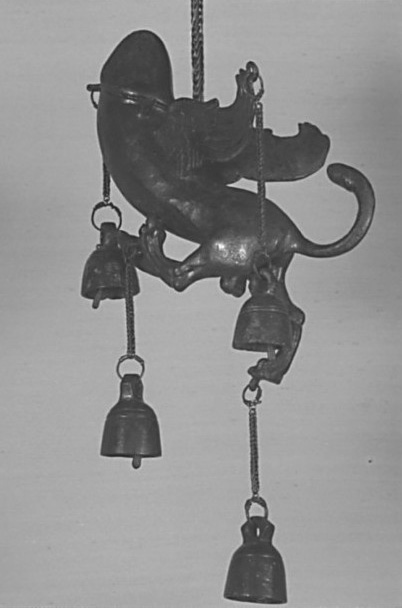
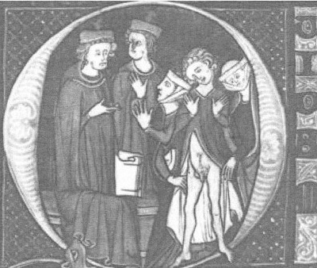
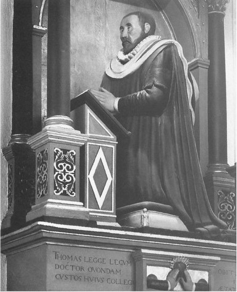

假托琉善 [3] 之名者，约公元4世纪。
柏拉图的《会饮篇》中提到，阿里斯托芬讲述过一个关于人类起源的寓言故事。据他说来，人类的祖先是一种圆球形的生物体，生殖器长在体表；个个四手四足，双脸相对。他们有三种不同的性别：一种人有两个男性生殖器；另一种人有两个女性生殖器；第三种人则是雌雄同体人，拥有男性生殖器和女性生殖器各一个。随着时间的推移，这种生物变得傲慢自大，目空一切。为了惩罚他们，宙斯将他们一分为二，割成两半。虽如此，他们却宁愿绝食自戕，也不愿放弃自己的另一半，因为“他们做任何事情都不愿意分开”。宙斯动了恻隐之心，又想出一个新的办法，即转动他们的生殖器官，使他们可以彼此产生性关系。因此，今天的我们都只是半个人，无论男女，每个人都在寻找自己的另一半。从雌雄同体的个体中分离出来的男人，在找他另一半的那个女人；而从女性双体人中分离出来的女人，则是“对男人没有兴趣却依恋女性”的人；从男性双体人中分离出来的男人，则更愿意追求男性，从小就“喜欢与男性同榻而眠、相互拥抱……因为在他们身上男性的本质最为明显，并且……他们能从和自己同性的共处中获得享受”。
阿里斯托芬的这番演说词后来演变为一个关于性别起源的神话故事。但这个神话背后的寓意何在？表面看来，它似乎在说，一些人只会对同性有兴趣。然而，很多古典主义者却不以为然，他们指出，阿里斯托芬这位喜剧诗人总是有着最为离经叛道、戏谑讽刺以至于荒诞可笑的想法，比如鸟类开议会、妇女参政等等，因而柏拉图选择让他来讲述这个故事并不是偶然的。有一点我们可以肯定，对绝大多数古希腊和古罗马时代的人来说，以发生性关系的对象来对人进行分类，这一想法匪夷所思。古代并不是性自由主义的时代。当时的性道德处于道义与法律规范的严格约束之下。但是，对于道德的注重仅限于性行为，而非性欲的对象。古代人并不以生理上的性身份来理解他们自己，但维护社会性别身份对他们来说却至关重要，这一点我们后面将会讨论到。这就与现代社会的人理解性别的方式有着很大的区别，现代人理解和判定自己性别的中心依据是诸如异性恋和同性恋这样的概念。正是基于这一区别，米歇尔·福柯、保罗·贝内、戴维·哈波林或约翰·温克勒等历史学家都将古代世界定位为“性存在之前的世界”。这一时期，性的概念以及它所蕴含的文化意义都与今天的有着本质的不同。
古代世界的性文化也绝不单一，在不同的地域和不同的历史时期都存在着很大的区别，这本简介性质的图书限于篇幅，很难详述。因此，在本章中，我们主要讨论古希腊和古罗马的情况。仔细分析古希腊人和古罗马人看待性的方式，会给我们提供有益的背景知识，也可以为现今世界中有关性的关键问题提供比照。
古希腊的性文化与其政治和历史背景密切相关。希腊社会的中坚力量是一小部分男性精英公民。女性公民和儿童在社会中处于从属地位，没有任何政治权利；而外来移民和奴隶则连公民身份也不具备。更准确地说，女性公民的地位类似于未成年人，时刻处于男性亲属的法律监护之下。当时的性文化正反映了男性公民的社会权力，其核心是男性的享乐。古希腊人对性的理解是阳具中心主义的，性的唯一定义就是阴茎的侵入。人们认为除此之外的亲吻、爱抚和其他形式的身体接触是示爱的表现，但它们并不属于性行为。因此，在古希腊人的概念中，性不是一种相互的关系，不是一种对于亲密情感的共同表达，而是一种单方面的行为——对他人的侵入。性伴侣的身体愉悦或者说配合，则被普遍认为是无关紧要的。男性被鼓励利用阴茎进行侵入式的性交，以获得征服感，控制处于受支配地位的性伴侣。这样的性关系体现了社会政治中的权力关系，因为男性在战场、政治和性的方面，都拥有其作为公民的社会地位。
这一时期的性文化与人们对于性和性别的看法密不可分。当时的医学认为人体是弱不禁风的，由一团极不稳定的液体所组成，极易因为年龄、饮食和生活方式而失衡。人们认为人的衰老和最后的死亡是因人体变冷和液体蒸发所致。因此，控制饮食，以及其他控制体内液体健康平衡的方法，成为了当时的流行文化。公元2世纪的古罗马名医伽林在其撰写的医学论文中，认为性别是一种流动的状态。受他的影响，人们将男性视作热烈、强壮的一方，而女性则是被动、虚弱、潮湿和阴冷的一方。她们由于月经等生理现象，流失了身体热量和生命能量，又通过性交夺取男性的热量和能量。因此，人们将性行为本身定义为和身体获得热量有关的一个过程。在审美上，希腊人则更倾向于欣赏阴茎小巧的男性，认为他们具有一项优势，即在战争时面临相对较小的风险。
正如历史学家托马斯·拉克尔所指出的那样，古典的性别模型中蕴含了一种“单一性别模型”：人们的性别是流动不定的，因此男性如果体内热量流失，就有女性化的危险；而女性如果身体热量增加，则会变得具有男性特征。这样的思维模式给人们带来了一种心理感受：性别不是一个稳定的、生物学的特征，而是一种受到潜在威胁的身份。男性如果与寒冷的女性身体过度性交，由于射精导致体内的液体减少，体内的生命热量流失，就有女性化的危险。因此，那时的人们认为虽然性对于维系健康是必要的，但过滥的性交则对男性有危害。相反，女性阴冷潮湿的身体则需要男性的热量来弥补自身不足的生命力。更加重要的是，女性需要液体的种子来维持她们子宫的稳定性（希波克拉底 [4] 学派认为子宫处在漂移不定的状态中），让子宫不至于因为寻找液体而在女性的体内四处移动，导致女性窒息。
部分古希腊和古罗马人认为女性天生性欲过于旺盛，这一观点也体现了上述的医学观念。有关提瑞西阿斯的寓言便反映了这一观点，这个寓言最著名的版本见于奥维德的《变形记》。奥维德讲述了一个名叫提瑞西阿斯的男人的故事，提瑞西阿斯曾被诸神变成女人长达七年。在作为男人和女人分别体验了性关系之后，他被要求前去裁决宙斯和他的妻子赫拉之间的争辩：男人和女人谁的性快感更强？当他宣布答案是女人时，赫拉出于报复弄瞎了他的眼睛，因为他道破了这一女性的秘密。
当时人们认为女性是比男性低级的生物，认为女性不具有男性那样的对于性欲的自控力。因此，女性的性存在被认为是危险的，因为她们对于性的饥渴会榨干男性，更坏的结果是将他们变为女人。在当时的社会中，女性的社会地位和公民地位都极端低下，因此男性渴望通过建立和维护性别分界来稳固自己的男性气质。男性的性别身份是脆弱的，男性气质不是建立在男性身体的基础上（因为人们认为男性的身体是不稳定的，有随时滑向女性气质的危险），而是通过日常生活中体现男性气质的侵略行为来实现，其中也包括性行为。为了维护男性气质不被侵犯，男性在性关系中的表现是最关键的，他的性欲望则不那么重要。性能力低下常常被认为是男性气质的耻辱丧失，也常常被小说和戏剧拿来作为笑料。古典文学中反映男性性悲剧的最著名的篇章中，就有这样一段：在古罗马彼得罗纽斯的小说《萨蒂利孔》中，主人公恩科比乌斯想要与美丽的喀耳刻发生性关系，喀耳刻却告诉他，除非他肯为了自己放弃他16岁的男友吉托才可以，这时灾难降临了：
医书作者普里斯蒂安曾提到，人们认为色情的意象可以作为治疗阳刚之气不足的良方：“让病人周围环绕着美丽的年轻男女；同时让他看书，这些书要能激发他的性欲，书中要有微妙的爱情故事。”不然，跳舞的女郎或各种刺激性欲的物体也可以起到作用，老普林尼 [5] 在他的《自然史》一书里就推荐了一份这样的刺激物的冗长清单。古代世界有关性的意象则更为普遍，几乎无处不在，尤其是阴茎的符号，它象征着用来驱除邪恶的男性力量。
考古学上的证据表明，当时的壁画、墙绘、涂鸦和建筑上，常有勃起的阴茎和其他象征性与繁殖力的符号，这些符号作为装饰常出现在富有家庭的花园和住宅中，或出现在日用物品如风铃和陶器上。假阴茎和其他的性工具在古书中也常有提及，在陶器上也有所呈现。有关性的教学手册也十分流行，还有一些书给予了人们更为宽泛的指导。古罗马诗人奥维德的《爱的艺术》三卷本都是给准备恋爱的人的建议，后来他写的《爱的医疗》是给因恋爱而心碎的人的一些小忠告。
当时的人们通常认为，男性气质的表达侧重点在于在公开演说和生活的其他各方面体现出进攻性和主导性，这其中也包括了性行为。在性行为中男性气质等同于积极的、进攻性的性角色。至于性欲望是正常还是反常，则要根据它违反人们通常所接受的性别角色的程度来判定。在古典性文化中，鸡奸或手淫之类的性行为并不会给人们带来道德上的不安。与性规范相关的问题主要集中于阴茎的侵入。这种侵入行为象征着男性的身份，也象征着社会地位，但被侵入的对象是女性还是未成年男子，则无关紧要，重要的是谁是这一侵入动作的实施者。侵入者被认为处在主动地位，而被侵入者则被认为处在被动地位。一个生来是自由民的男人，如果渴望被侵入，则是有悖常理、自贬身份的，因为这样的欲望会让他的社会地位沦为类似女性或奴隶的角色。“合适的”被侵入对象是女人、未成年男子、外邦人和奴隶，这些人都不具有和雅典的男性公民同样的政治和公民权利。当时，社会地位就是根据这样的主动/被动角色来确定的，而不是异性恋/同性恋这样的分类，后一范畴到很久以后才出现。

图1庞贝古城出土的带翅膀的阴茎饰品，可能是家庭装饰所用，公元1世纪。
因此，规范性行为的准绳，也是构筑于公民的政治身份之上的。正如古典学者戴维·哈波林所说：“公民身份对于雅典自由民来说，不仅是一个政治和社会概念，而且是一个性和性别化的概念。”古代社会推崇一种“崇尚侵入和主宰的民族精神”，将性秩序和政治与社会秩序混同起来。因此当时的社会并没有在公共政治领域和私人性行为之间划清界限。人们常常以不当的性行为作为武器来攻击自己的政敌。这种公开话语中的性侵犯很常见，而且毫无掩饰，有时还可能带来严重后果，包括导致被攻击的人丧失公民身份。性行为的等级中，最贬低身份的行为就是被控有为女性口交的行为，紧随其后的是为男性口交的行为，因为不论是男性还是女性，嘴部被阴茎侵入都是丧失身份的（因此，这一行为最好是由卖淫者或奴隶来完成）。莱斯博斯岛上的人因为其堕落不堪的性行为而声名狼藉，因此古希腊人所使用的动词“口交”含有“像莱斯博斯人 [6] 那样行为”的意思，更具体的就是指“吮吸阴茎”。该词并不强调施行口交者的性别，只有接受口交的人的性别是确定的。
男性之间的恋情则广为当时的社会所接受，极其普遍，并广泛见诸当时的文学、艺术和哲学作品。不过，对于男性之间的性行为，人们的看法却不尽相同，对于到底是爱慕年轻男子还是爱慕女人更为高尚的争议无处不在。一些人认为爱慕男性比爱慕女性更为高尚，因为去爱一个和自己平等的生物，比去爱一个低等生物要好。《欲望》是一本古希腊的谈话录集，作者已不可考，其中有一段关于爱慕男性和爱慕女性各自有其优点的话，是这样说的：
该文还继续论证说，与女性发生性关系是为了满足繁衍后代的需求，但一旦这种基本需求被满足，并且社会向一个更高级的阶段发展，男性就自然会想追求文化上更为高级的享乐形态，因为这种享乐已经更多地脱离了自然形态：
古希腊诗歌中还提倡，最优秀的军队需由男性的同性恋人所组成，因为他们为了保护自己的恋人，并在他们面前有所表现，会尽最大的力量杀敌，表现得奋不顾身——柏拉图在《会饮篇》中也提出过这一观点。但和其他一些人一样，柏拉图本人曾表达过对男性之间性关系的厌恶。他主要批评了那些在这一性关系中处于被动顺从地位并从中获得享受的男性。他认为这些男性是软弱而女性化的，只是存在于男人身体里的女人。这些女性化的、顺从的男性违反了性别角色的常规模式，将自己的身体奉献给其他男人侵入，等于是自愿地接受了处于社会底层的女性的地位，这些人被认为有悖于自然之道，和那些扮演男性角色的女人（被称作女奸者）一样，对社会秩序是一个极大的威胁。
侵入者的角色对于男性的社会和政治地位有着举足轻重的意义。基于这一点，成年男性之间的性关系会令人们感到非常不安，因为其中的一个人必须要扮演屈从者的角色。而与未成年男子发生关系则可以部分避免这一问题，因为男子必须要到成年才具有公民身份。古典文化中的人们认为，年轻男子脸颊上和大腿上长出毛发会使人产生性厌恶。未成年男性从青春期的开始到成熟的少年时期，是具有性诱惑力的，但一旦长出了胡子和阴毛，这种诱惑力就消失了。雅典人认为成年男性和少年男子之间的情爱是自然而高尚的，只要他们遵守性交的规范。
这种成年男性对少年男子的性渴求，被称作希腊式恋爱。人们往往将此看成是成年男子（“情人”）向年轻的、处于被动地位的“男孩”（“被爱者”）——一般最小12岁，最大17岁至20岁——提供理论和肉欲上的指导的关系，这与现代人看待师生间性关系的态度截然不同（不过，职业的教师和培训者——其中很多人原先是奴隶——是不得勾引他们的学生的，奴隶也不得引诱年轻的自由民）。希腊式恋爱关系常被视为年轻男子所受的一项常规教育，并成为了一种制度化的关系，即成年引导者将哲学命题和常识教授给未成年男子，为他作好成为公民的准备。
虽然希腊式恋爱关系被社会广为接受，但身为自由民的未成年男子是未来的公民，这就意味着这种关系要受到一定程度的道德约束。因此，在这一关系中注重性交规范是很重要的。特别是对于未成年男子而言，他们在希腊式恋爱关系中不应当体验性欲望。如果他们愿意为年长的男性献出肉体，应当是出于“友爱”——对于追求者的友谊、尊重和爱。因此人们认为，男孩应该在被对方追求了相当长的时间、让对方付出相当昂贵的代价之后，再委身对方，才显得得体。男孩如果从交欢中获得愉悦，则会被指责为“女性化”和不知羞耻，“不是男人当有的行为”（因为人们认为只有女人才对性愉悦有着贪婪的胃口）。
有关女性之间性关系的史料则寥寥无几，研究古代性史的历史学家哈波林、福柯等人的研究也几乎全部集中于男性之间的性关系。公元前7世纪出生在莱斯博斯岛的诗人萨福是一个罕见的例子。她的诗歌描述了女性之间的强烈情感，虽然这些诗歌留存至今的很少。古代男性则会以否定、蔑视或者窥阴的态度来描述女性之间的性关系。他们习惯于认为与其他女性发生性关系的女人拥有硕大的阴蒂，正如男人的阴茎一样；或者想象她们在假阴茎的帮助下，获取了男性的侵入角色。
虽然男性之间的性关系一直是古典性文化中最能引发热议的一方面，但这只是当时男性众多的性选择之一，他们的其他选择还包括性交易和婚姻。当时的人们认为只要是公民，无论男女，都应当有合法的婚姻以及婚内性行为，这也是他们对于社会的基本职责。体面的女性在婚姻之外不应该再有其他的性关系，她们的性行为仅限于婚姻之内。通奸被定义为有已婚女性参与的性行为（而另一通奸者的婚姻状况则无关紧要）。通奸是典型的古代性犯罪，也是很多古代文学作品津津乐道的主题。在古代世界，大部分不正当的性关系都会得到不成文的默许，但通奸却会遭到公众谴责和社会唾弃，引发复杂的法律后果。人们认为，勾引一个雅典女自由民，比强奸更为罪大恶极，因为秘密的通奸会让男人无法确定自己孩子的血统，不像遭受强奸后的女子生下的孩子，在确认身份后会被直接杀死。因此，人们认为强奸不是对被强奸的女子本人所犯下的罪恶，而是对该女子的丈夫、父亲或男性监护人所犯下的罪恶，也是对公共秩序的威胁，因为受伤害的男性一方很可能会采取复仇行动（无论男女双方是否你情我愿，只要当场发现，这些男人都可以合法地将犯奸者处死）。罗马的奥古斯都皇帝在公元前17年颁行了关于通奸的《尤利乌斯法》 [7] ，这项法律对通奸进行了重新定义，以法律的形式明确了通奸已经不仅是家庭事务，而且是一种应当遭到流放或被处以死刑的罪过，与整个社会利益攸关。事实上，该法律规定，如果女子的丈夫和父亲没有在一定的时间内及时处死罪犯，任何有责任心的公民都可以代他们执行。
花钱找舞女、“夜娼”和其他形式的卖淫者，虽然也被认为是可悲的行为不检点，但无论如何，却比与女自由民发生非法的性关系要体面得多，风险也要小得多。古代世界中，性交易无处不在，唾手可得。在很多古希腊和古罗马的城市中，卖淫者需要缴纳赋税，对当地经济的贡献很大。性交易的顾客无一例外是男性，而卖淫者却不但可以是女性，也可以是青少年男子（他们常常之前是奴隶或其他非公民）。性交易似乎是以公开的方式进行，地点不仅局限于妓院，也包括公园、墓地等公共场所，而考古遗迹中亦发现过卖淫者的草鞋鞋底上“跟我来”的字样在地上留下的痕迹，说明这也是他们拉客的一种方式。男性可以通过购买的方式，拥有自己专门的性奴，或者与朋友们共享。对于富有的男人来说，召唤更为精致高雅的高级妓女，是格外的享受，也是被社会所接受的。用公元前4世纪的著名希腊政治家狄摩西尼 [8] 的话说：“高级妓女为我们提供享受，侍妾满足我们身体的日常所需，妻子则负责为我们诞育合法的后代，并忠实地保卫我们的家庭。”成功的高级妓女从前常常是奴隶或外来移民，她们所拥有的自主权要比公民家庭出身的女性大得多，其中的一些人甚至财力雄厚，地位显赫。
成年男子居于主导地位，能够随意进犯处于屈从地位的女性或少年男子，这对于古代雅典的政治秩序至关重要。古代雅典民主制度的奠基者梭伦通过建立公共妓院，控制了嫖妓的价格（让任何公民都可以负担），由此在性奴的使用权这一问题上实现了民主化，他因此备受古希腊人的推崇，虽然这一做法事实上的正确性很受争议。正如戴维·哈波林所指出的，这一做法的重要意义在于将嫖妓民主和政治民主联系起来：任何男性公民，无论贫富，都应当可以花得起钱购买性享受。一些男性自由民由于贫穷而面临处于被压迫的社会地位，从而被女性化的危险；而现在廉价的卖淫者供应不绝，他们便可以通过性主宰的方式，重新获得社会身份上的统治地位。一些历史遗迹也可证明，虽然由于时间和地点的不同，古代世界中卖淫者的价格会有所差异，但总体上来说都十分低廉，如庞贝古城的墙上就有卖淫的价格表（最廉价的性服务与一块面包的价格相当）。
将男性卖淫这一现象作为问题来研究，可以揭示古代世界中性、性别和政治之间的复杂关系。虽然男性卖淫并不违法，但自由民如果自愿卖淫，则被看作是自贬身份，通过成为性活动的被动对象，降至与女性、外来民和奴隶相同的地位。任何雅典的男性公民，如果在青少年时期曾从事卖淫，则会失去他的公民权利和政治权利。
在古代世界，性除了与公民身份相关，也与宗教活动密不可分。人们会特地通过性交、跳舞、唱歌和其他仪式来庆祝某些公共节日，比如在罗马统治下的埃及的克诺伯斯，便有这样一个一年一度的宗教节日。在古代的近东地区，由宗教场所的奴隶卖淫者为前来朝拜的人提供性服务的现象十分普遍。与此不同，古希腊和古罗马的神庙中是否有卖淫活动存在，尚无确凿的证据。但古罗马的卖淫者却有他们专门的宗教节日，他们还更多地作为敬拜者或服务者参加其他宗教节日。
不过，我们还需谨记的一点是，古罗马和古希腊文化并不是同质单一的。虽然古罗马和古希腊的性伦理道德十分相似，它们之间却也有一个显著的不同，即在古罗马文化中，鸡奸问题显得较为严重，而且希腊式恋爱关系（以及其所谓的教育上的好处）在古罗马也不被看好。虽然古罗马的成年男自由民可以与男妓、奴隶或外国男人发生性关系（只要他在其中扮演进攻的一方），也可以出没于妓院，但古罗马的道德法律，如《尤利乌斯法》却禁止成年男自由民与未成年男自由民之间发生关系。古罗马帝国每过一段时间便会重新颁行这样的法律，以彰显新皇帝对于公众道德的关切。不过，这样的法律很少被强制执行。不少备受推崇的古罗马诗人，如卡图鲁斯、奥维德、贺拉斯和维吉尔等，都在诗中讴歌男性之爱。提布鲁斯在一首诗中还描述了他的爱人，青年男子马拉修斯因为一个女人而抛弃他的心碎经历。
古希腊时代，女性的名字在她的一生之中都不得在公共场合被提起；相比之下，古罗马帝国女性的公民地位则要高一些。古罗马女性（至少是有产阶级的女性）体现出了比古希腊女性更多的独立性。比如，虽然古罗马法律规定女性必须要有监护人，但在实际生活中这种做法后来逐步消失，上层阶级的女性（在她们的父亲死后）可以拥有和支配财产。人们眼中的不正当性行为，尤其是女性的不正当性行为，也代表了古罗马社会中人们对于所谓社会腐化和道德堕落的更多关切。上层妇女的性过错，如通奸或与奴隶发生性关系，被古罗马的道德法律裁定为犯罪行为（虽然此类行为也同样很少受到实际的法律制裁），当时的文字资料也反映出了男性对于女性此类行为的不安。
历史与社会学理论家米歇尔·福柯提出，应当将古希腊和古罗马时代的性行为法则置于一个更大的社会背景中，这一背景就是当时的人们十分注重怎样成为一个好公民：他们对公民的饮食、运动以及与妻子和奴隶等从属人员的关系，都制定了规范。福柯还指出，相比较起来，在古希腊和古罗马文化中，人们对于食物的文化关切，要比对于性的文化关切重要得多。的确，在古代世界，对于许多人来说，日常生活就意味着求得生存，用古代史专家彼得·加恩西的话来说，就是“与食物息息相关”。对于食物和政权的注重，在古罗马人身上更为明显。当时上层社会男性的社会和政治权力几乎不受限制，而且社会上又弥漫着对道德堕落的不安心理，在这样的社会背景下，以塞内加为代表的禁欲主义哲学家们便提倡一种精神，即男性精英们要掌控他们的欲望，同时避免食物、酒精和性放纵可能带来的种种害处。如塞内加所说：“道德已经堕落，邪气主宰着一切，人类正在腐化，罪恶正在弥散。”不过，他在给自己的朋友路西里斯的信中又补充道：
为了对抗这种享乐主义的倾向，一种崇尚自我掌控的时代精神应运而生；这种精神被视为一种能给人带来道德快感的选择，一种可以让人生更美好的审美体验。过有道德的生活，意味着“在所有事情上”都实行自我节制和自我平衡。这一含义广泛的社会精神包含着性方面的自我节制，其重点是父权制环境中的性节制。原本，在父权制环境中，家中的任何一个人——不仅仅是男主人的妻子——都可以成为一家之主的性对象。
基于希波克拉底的医学理论和柏拉图、亚里士多德等人的观点，伽林等古罗马名医强调“过度”的危害，宣扬在营养和性事上实行节制的好处。在性伦理道德方面，他们主张，虽然适度的性生活是维持健康的必需，但过滥的性行为则应当避免，因为这会使男人变得虚弱、性无能，患上消瘦症。著名学者老普林尼在他的《自然史》一书中，不无赞许地用大象作为例子：因为“它们隔年才交配一次，而且每次只交配五天，不会再多。第六天，它们一头扎入水中，不洗干净就不回到种群之中”。不过，自我掌控这一概念也有其政治寓意。人们认为厄洛斯 [9] 所代表的爱欲力量有可能会威胁到社会政治秩序。正如福柯所指出的，当时的人们习惯于指责暴君的性生活放纵和不受节制，还认为控制好个人的欲望是民主制度存续的关键。古代历史学家詹姆斯·戴维森曾说过：“希腊人……觉得控制好所有欲望是作为公民的责任，虽不必费尽心机去完全征服这些欲望，却要训练自己去对抗它们。”到公元5世纪，自我掌控的文化已经在社会精英中得以确立。这一文化注重性行为的节制，又受到早期基督教的影响，崇尚各种形式的禁欲。虽然基督教道德在某些方面与古典道德一脉相承，但其兴起却将彻底改变性所蕴含的社会与政治意义。
基督教与肉体的堕落
早期的基督教虽然融合了古代社会晚期某些关于自我掌控的思想，但是却将它们加以改造，构想出一种完全不同的性伦理道德。在古代社会晚期，禁欲因被认为是一种男性自我掌控的德行而备受推崇，而到了公元5世纪，基督教教义开始宣扬贞节观和禁欲观的时候，禁欲就同时针对了男女。当时世俗的政治权力开始向教会转移，在这样的背景下，性欲因为让人们耽于结婚生子的俗务而备受指责。性欲让人们不能集中精神，为进入天国和死后的生活作好准备。基督教对于性的敌意，反映了当时一项更为普遍的宗教任务，即将人们从世俗的束缚和欲望中解放出来。独身和贞洁被视为行为规范，而性和欲望则要受到监管。
奥古斯丁（354年—430年）是西方基督教的奠基人之一，对这一情形的发展产生了至关重要的影响。他的一些不成形的学说，被发展为后来的一个重要教条——“原罪”。“原罪”的观点将《创世记》中所叙述的上帝将亚当和夏娃逐出伊甸园的原因视为性。奥古斯丁宣称，如果亚当和夏娃没有沦丧于肉体的欲望，那么天国里性的形式，只是“在伴侣的臂弯中温柔地睡去”而已。他还认为“充满肉欲的性是上帝的敌人”。与古典时期的人们不同，奥古斯丁认为性不是由身体的热量导致的，而是由“色欲”——罪恶的欲望——导致的。人们不顾体面走向堕落，表明“肉体的堕落”战胜了道德意志的力量，而性交这一过程也沾染上了原罪的色彩。因此，奥古斯丁鼓吹禁欲。不过，从他的自传《忏悔录》中可以看出，他本人觉得对抗“色欲的肮脏”的过程并不容易。这本书中他的自我形象十分著名，他将自己描绘为一个向上帝祈祷的青年，祈求上帝“赐予我一些贞洁和节制力，不过不是现在”。
由此，基督教伦理产生了一种对于性的明显敌意，并进而发展为对肉欲的敌意，将其看作精神救赎的障碍，会将人类禁锢于动物的欲望之中。人类自出生开始，就被罪恶所玷污。按照加尔文的说法，一个新生的婴儿就是“罪恶的温床，在上帝面前只会是可憎可厌的”。对于古希腊和古罗马人来说，勃起的阴茎是权力的象征；相反，在奥古斯丁眼中，它象征着色欲对于人的奴役。公元3世纪的希腊神学家奥利金笔下的女性，则更是“欲望的奴隶……甚于禽兽”。
基督教对婚姻的态度是矛盾暧昧的。遵照耶稣的训示，“人到我这里来，若不爱我胜过爱自己的父母、妻子、儿女、弟兄、姐妹和自己的性命，就不能做我的门徒”（《路加福音》，14：26），早期的基督徒本质上将家庭看成影响宗教虔诚的障碍。对于婚姻，他们则更多持怀疑态度，因为肉体的诱惑是由魔鬼操纵的，会使人们处于险境。13世纪，教皇英诺森三世就明确阐述了这一矛盾：“人人都明白，即便在夫妇之间，性事也必须有肉体的骚动、情爱的热烈和欲望的气息才能进行。”新教的神学家马丁·路德对婚姻中的性行为也表达了同样的厌恶，宣称：“如果上帝要问我对于这件事的意见，我会建议他继续通过捏泥巴让人类延续后代。”但是，教会的神父们认识到，大部分的信徒们不太可能接受基督教的独身生活理念。因此，以使徒保罗为代表的神学家将婚姻看作与物质世界之间的一种合理妥协，并称赞婚姻为社会的基石。他们宣称只要夫妇结合的主要目的是繁衍后代，并且遵循一夫一妻制，对彼此忠实，就应该对彼此尽“婚姻的义务”，即性交。比起古代世界的观点，这一观点更强调婚姻在繁衍后代方面的义务——在古代世界中，收养的孩童或成人也可以成为继承人，和婚姻繁衍的后代一样为社会所认可。因此，在基督教世界，婚姻中有性行为存在至关重要。格兰西的教会法教材（1140年）中曾记载，无性婚姻可以作为离婚的合法依据。不过，教会当权者一般会对解除婚约的要求持怀疑态度，因为有的夫妇为了挣脱婚姻的束缚会不择手段，假称对方性无能。基于这一原因，不少地区，包括英格兰，都在教会法庭中引入了由“诚实的妇女”检验丈夫一方性能力的制度。历史学家安格斯·麦克拉伦在《性无能：一部文化史》中就记载了15世纪约克和坎特伯雷教会法庭上进行的这样一次检验：

图2中世纪对于性无能的检查，后来成为终结婚姻契约的合法依据。
奥古斯丁认为“对于很多人来说，完全的禁欲比完美地控制欲望更容易”。基于此，基督教婚姻被视作是退一步的选择，不如独身和其他禁欲行为。一些早期的教会神父，如奥利金，为了与色欲斗争，让其不致祸害自己的信仰，采取了自我阉割的极端行为。尽管这一做法在大众中从未十分流行，但到了公元4世纪，这种以自我阉割来体现基督教纯洁性的做法，还是引起了教会上层的警觉，他们开始在各类教会条规中谴责这一行为，并将其斥为异端。还有其他一些人，比如公元3世纪和4世纪的“沙漠神父”安东尼和杰罗姆，选择隐退于埃及的沙漠地带。这种与物质世界隔绝的行为，被后来的修道院继承并发展为一项制度。
基于对婚姻中性行为繁衍功能的强调，以及对其他出于肉欲的性行为的反对，女性之间的同性性行为尽管很少受到法律制裁，却不断遭到教会当局的谴责与压迫。教会对于男性之间的同性性行为所持的态度却似乎更加矛盾。尽管历史学家就当时教会对男性之间性关系的宽容程度还存有争议，中世纪史专家约翰·鲍斯韦尔却记录了一些例子，表明男子之间的同性结合似乎可以经由宗教仪式得到认可。他提出这种关系在中世纪早期的拜占庭帝国司空见惯，只是在14世纪以后才遭到天主教会的压制。毫无疑问，因地域和时间的不同，对于男性之间性行为的压制也有所区别。虽然基督教伦理将鸡奸视为一种不正常的罪恶行为，但直到18世纪之前，“鸡奸”都是一个含义广泛的词，包括男人和女人的各种“违背自然”的性行为（只要是不能产生后代的性行为），包括兽交、手淫、肛交、口交、男人之间和女人之间的性行为，以及男女之间采取避孕措施的性行为。
文艺复兴时代的佛罗伦萨曾因为鸡奸行为的泛滥而声名狼藉。1432年，该城设立了“夜务庭”，其唯一职责就是对鸡奸进行制裁。据历史学家迈克尔·罗克记载，70年的时间里，1.7万名男子（当地居民总数为4万人）曾因鸡奸而受到至少一次的调查。他以法律证据证明，不仅当时佛罗伦萨的大部分男性都有此类行为，而且大部分的处罚仅仅是少量的罚款而已。与此截然不同的是，在中世纪及文艺复兴时期的很多其他城市，比如奥格斯堡、威尼斯和加尔文治下的日内瓦 [10] ，宗教和世俗的权力机构都对鸡奸采取了更为严厉的处罚，包括监禁、阉割，甚至砍头、饿死或在火刑柱上烧死。18世纪对于鸡奸的惩罚愈加严酷，这个词的意义也转为专指男性之间的性行为。

1619年竖立在剑桥大学凯厄斯学院的一块纪念碑。纪念的是学院的院长戈斯林和他的同性恋人莱格医生。火焰之心的图形下方刻有文字：“他们活着的时候因爱而结合；愿他们被埋葬后也能在泥土中结合；哦莱格，戈斯林的心仍与你同在。”
基督教用了一千多年的时间，在欧洲确立了统治地位。在其宗教和政治权力确立期间及确立之后，有很多不同的教派生存于教会的边缘。这些教派并不都同样强调禁欲主义。例如，据说公元2世纪的埃及诺斯底教派 [11] 中的一支卡波克莱特 [12] 派相信为了脱离俗世，人类的灵魂必须先经历一切可能的俗世体验。该派因主张性放荡主义而颇有恶名，据说他们的主张有共妻和公开裸体等。
当然，我们需要记住，在更一般的意义上而言，基督教价值观的传播并不一定意味着人们一定会以教会认可的方式生活。但在基督教中却产生了一种极具影响力的性标准模式，该模式极力将贞洁与独身主义宣扬为精神理想的最高境界和将人从俗世事物中解放出来的方式。这与很多其他宗教截然不同。举例来说，犹太教就不赞成禁欲，认为其显然违背了上帝“多生多产”的教条。基督教将禁欲、摒弃俗世、仅为繁衍后代而性交和忠实于婚姻等概念理想化，这些都赋予了性以新的文化含义：它是撒旦作恶的主要领域，因此要对其怀有畏惧和躲避之心。大部分古典医学知识都认为缺少性爱对身体健康有害，与此相反，基督教对于贞洁和禁欲的美化，却推崇了一种性秩序，即无性状态是最高的精神理想。